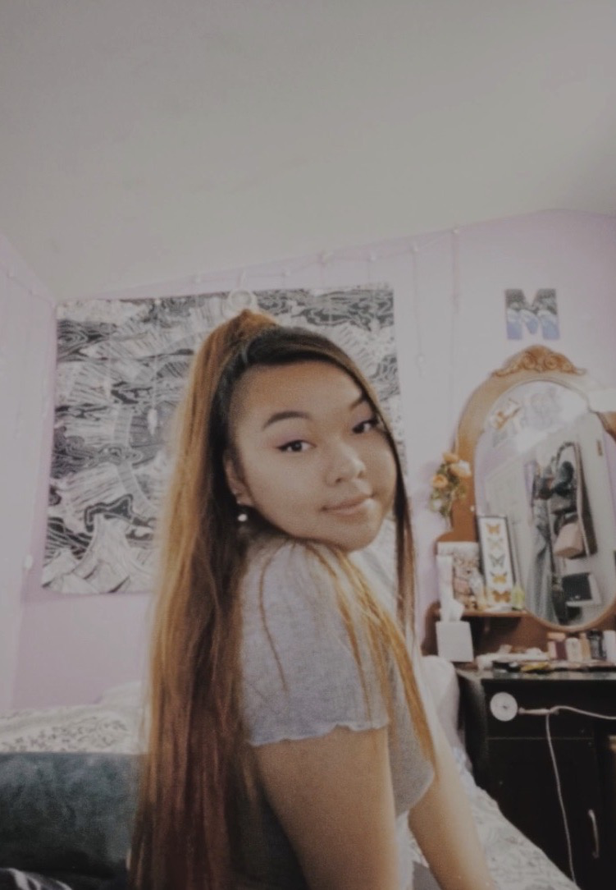

<!DOCTYPE html>
<html>
<head>
	<title>Lab 7 - Intro to CSS</title>
	<link rel="stylesheet" type="text/css" href="../css/site.css">
	<link rel="stylesheet" type="text/css" href="css/index.css">
</head>
<body>

</body>
</html>
					<div id="content">
						<h1>Lab 7: Intro to CSS</h1>
						<div>
					<h2> Big Idea</h2>
					<p> The purpose of this lab is to work on CSS and get a a sense of familiarity of CSS style sheets.<br>
						 Also get in the habit of rememebering the structure of adding it onto HTML. Then we add a new element to <br>
						 div, which is using "id" on images.After all the CSS tasks are done, we will follow <br>
						 the usual commiting to orgin and make sure <br>
						everything runs smoothly.<br>
				<h2> Challenges </h2>
				<p> The chllenges I faced was during adding a border around my image beause I was no used to using ID yet. I figured it out<br>
					and now there's a border around my image and I am more aware with how to deal with this issue in the future.
				<h2> Results</h2>
				<p> The results of this lab came out better than I expected. <br>
					I'm glad stylesheets exist because my page looks more homey to me. <br>
					The beneficial part of this lab was that I was able to practiced div on my image and had fun with modifying the little things.<br>
<br>
					<nav>
						<ul>
							<li><a href="../homepage.html"> Click here: Go back to CST 251 Homepage</a></li>
						</ul>
					</nav>
				</body>
